Works
Web developpement
Website or web oriented projects.
Insulhub Homepage Frontend
During this project during my internship in the UK, I did the homepage's front end of the company that we were working for, Insulhub. You can check the website here.
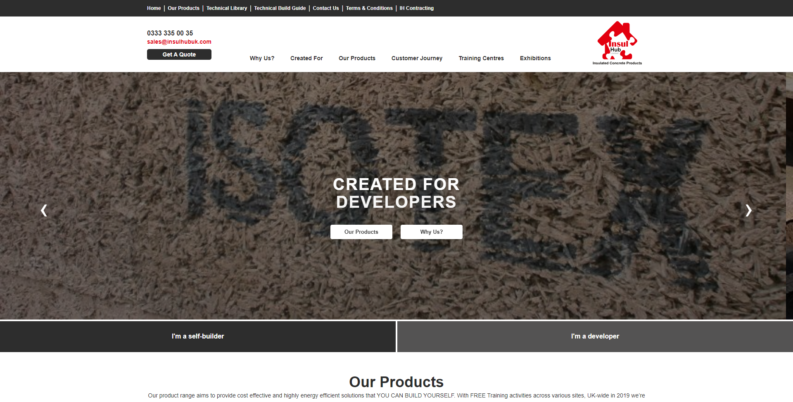
Gowebit
This is the first website that we made on our own. We needed to create a fictional company and make a website about it. I choose to make Gowebit, a fictional web agency. There are a lot of things that I learned in web development since, especially during my internship in the UK, but I think it is good to show one of the first websites I built. You can access it here.
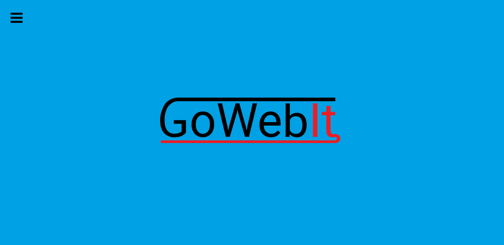
Programming
Code and game.
JavaScript Pong like game
This is a game that I made using JavaScript. It was the goal of a course in programming that we have. It is buggy and not that good, but that's one of the first things that I coded in JavaScript.
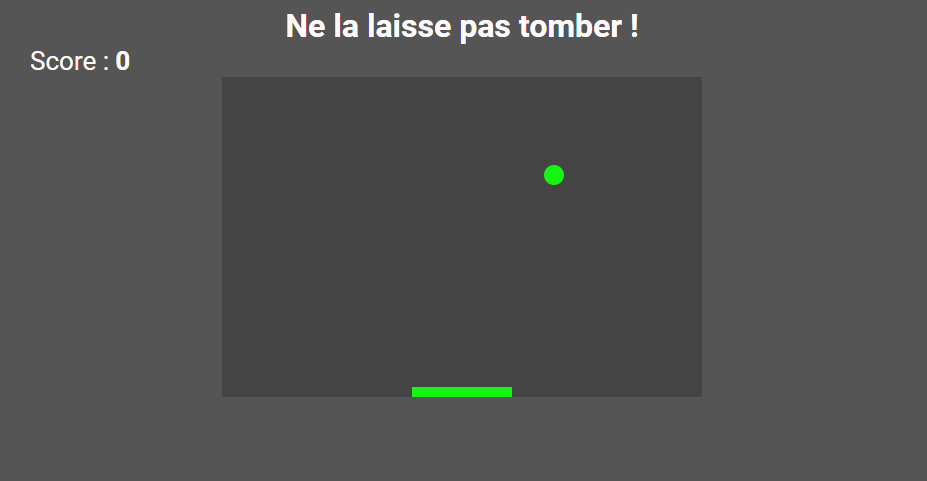
Paint JavaScript Program
To keep my JavaScript skill up, I challenged myself to redo Paint within JavaScript. You can try the programme here.
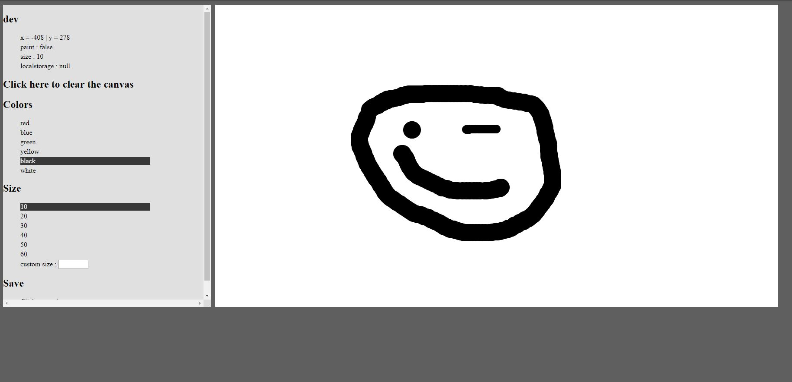
Tiles Breaker in Lua
This is a game that I made using Lua. It is a challenge in an online game programming training that I bought, GameCodeur.fr. The game is made of pure code, within the Lua framework Löve.
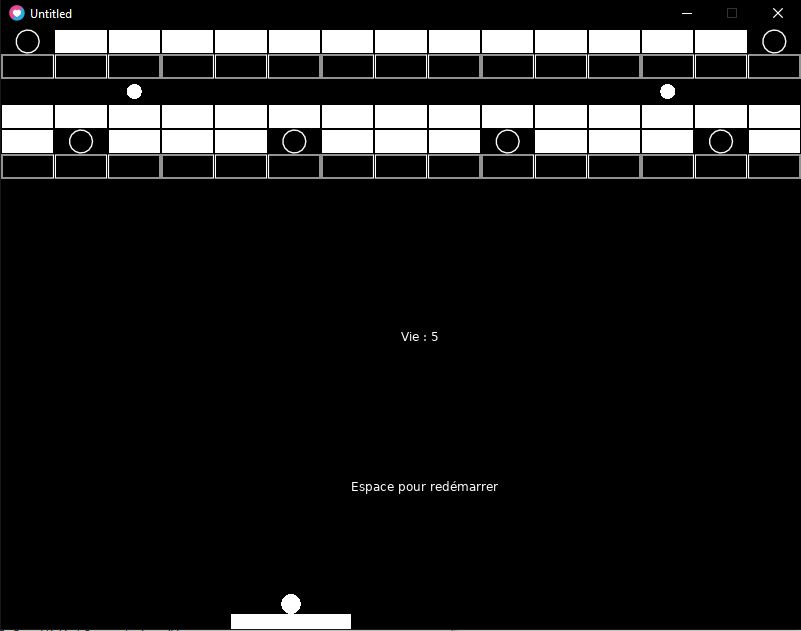
Design
Design works.
Citation Flyers
We needed to make these flyers only rely on the citation and play around it. For example, mine need to be folded in a certain way that make only one of the citation visible and when you unfold it, it revealed the other one.
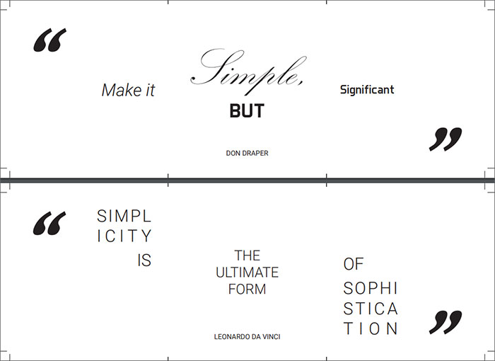
Initials
The goal of this design work was to make us do something only with our initials, so I worked on two things : the color and the two letter "relation". I made the color mix together, as well as the letter itself.
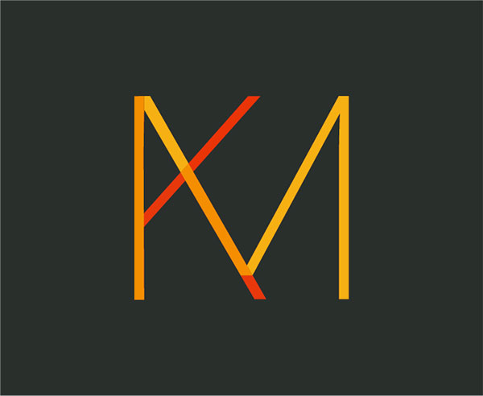
Fire brigade of Sainte-Croix's logo
I was asked by the fire brigade of Sainte-Croix to remake their logo. With the help of my father, captain in the brigade, I remade this logo within illustrator.
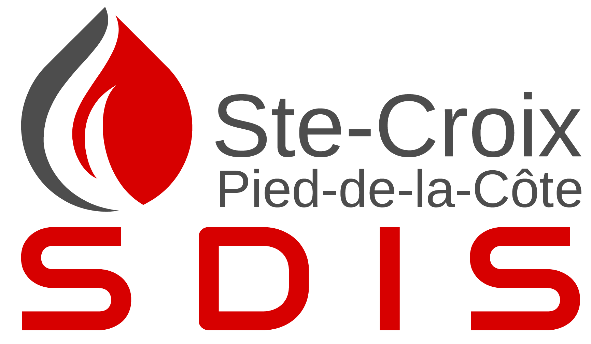
Projects
Main projects done during my training.
Ecomarketing - Montreux Jazz Festival
This project is one of the half-yearly projects to be done, the ecomarketing project. This is a group project of 4 people, including a project manager (It was me). It trained us to work as a team, make appointments and present to the client (played by our marketing teacher). It also taught us to comply with the customer's needs. We had to choose a Swiss event and propose a marketing strategy different from the one in place. The renderings are: 2 reports (phase 1 and phase 2), 1 video, 1 radio spot and 1 poster. The video was made by myself (Link here). You can find other information about reports in the following links: Report 1, Report 2.
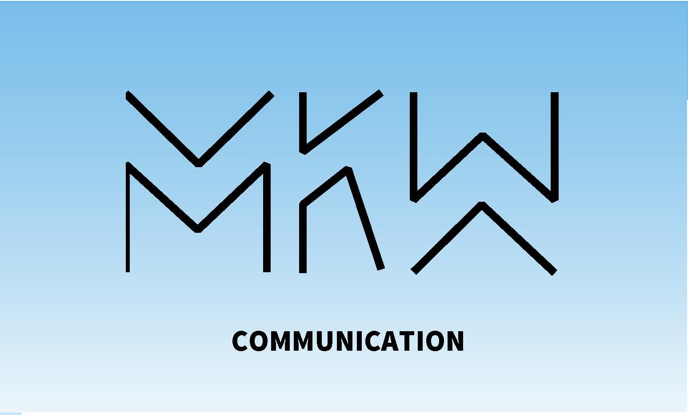
CIE
CIE are specials weeks were we focus on a specific aspect of the mediamatics to make a final product or to learn something in deeps.
CIE Wordpress, PHP and SQL
This CIE was a one week focus on learning the CMS Wordpress, and some PHP and SQL specificity the last day. We learned how to use Wordpress, adding plugin, setting the site and adding content, for example. You can see one of the final site here. We had to do another one, it was for trying Wordpress in general. You can see it here.
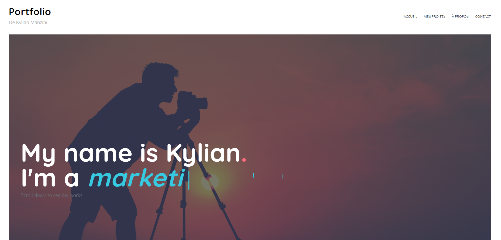
CIE Design and Packaging
This cie was a one week focus on a real product for a company. This company is a vegetable producer and it was introducing a new type of tomatoes, sweeter than normal. The tomato is named Nebula. The idea was to make a new design and a packaging for this tomato.
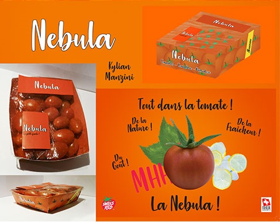
About
Kylian Manzini
I'm a Swiss mediamaticien - A mix of web developer, designer and
marketing agent.
I am currently in my 3rd year of training, which consist of two
internships.
I had the opportunity to work in the United-Kingdom for the first one, and i did it! I
wanted to improve my English and to get out of my comfort zone.
I am open
for propositions with regards to a second internship. If you are interested, you can contact me via the
contact page.
You can download my CV here.